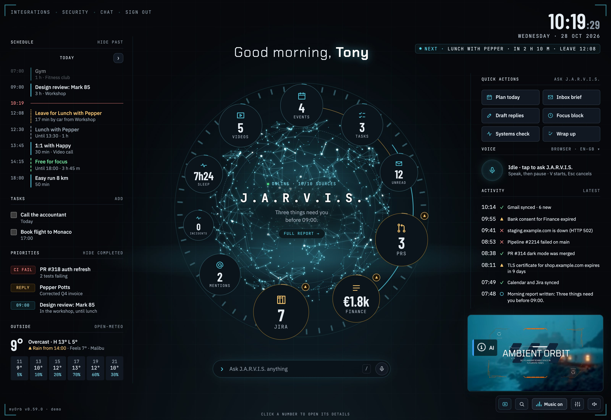
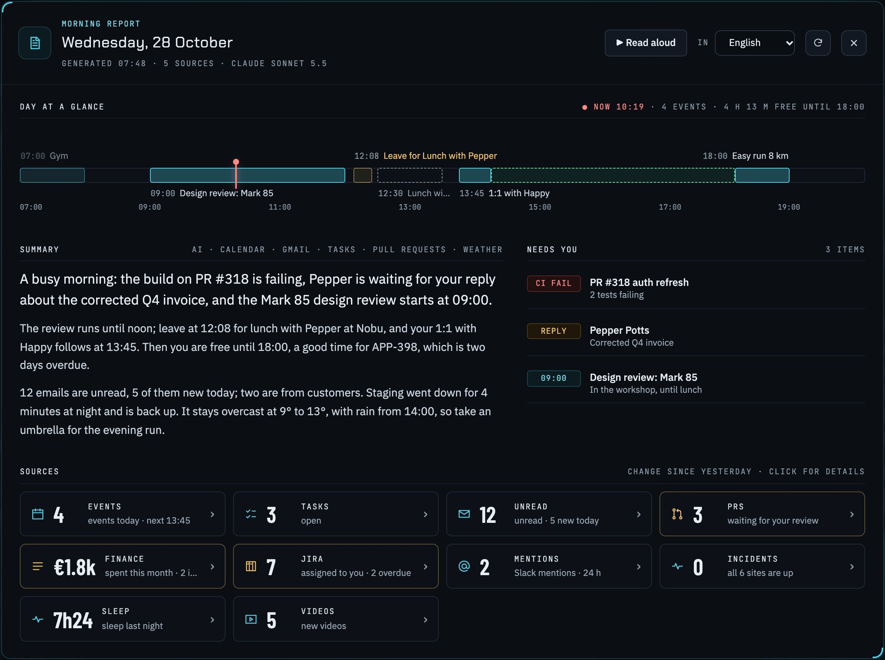
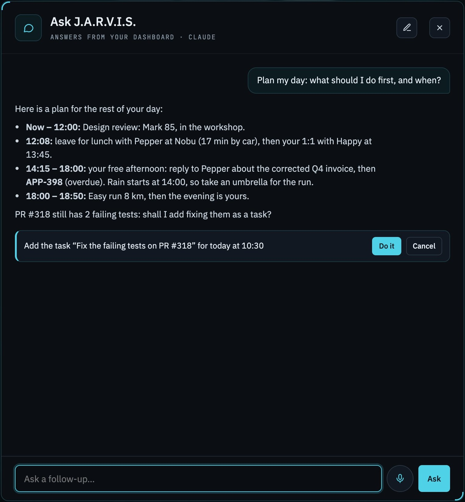
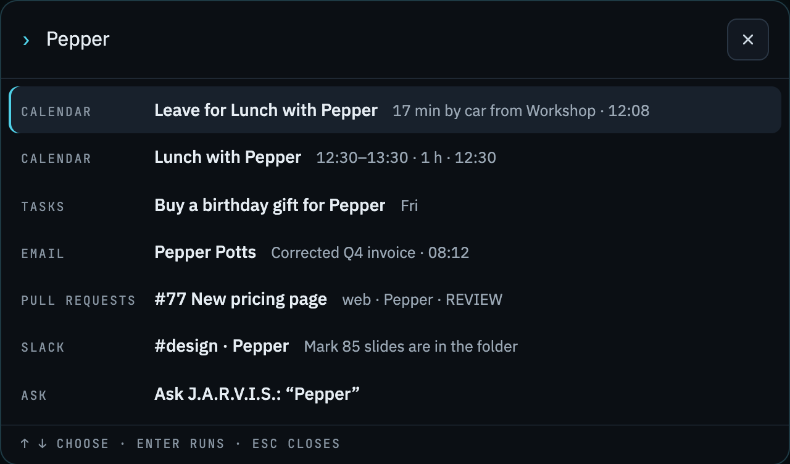
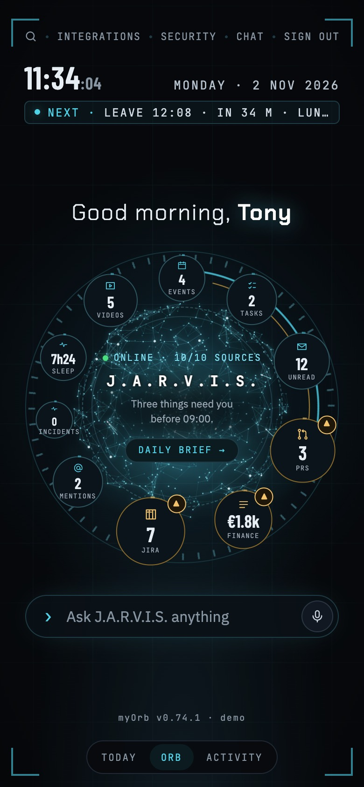

Personal AI briefing dashboard
My whole day around one orb: email, meetings, tasks and work, summed up by AI.

Erik Telepovský
Why I built it
● Gmail
● Calendar
● Jira
● Asana
● Bitbucket
● Slack
● GitHub
● Uptime Kuma
● Weather
● YouTube
● Strava
● Apple Health
A dozen tabs just to see what today holds.
Read it all, tell me what matters first.
An assistant like Tony Stark’s.
The heart of it
One number per source around the assistant: meetings, email, tasks, pull requests, Jira…
Bigger, and marked, when something needs me.
A click opens what is behind it, with actions: Done, Mark as read, Approve.
Every morning
● Written by AI from all my sources, at the time I choose.
● What needs me first, the day at a glance, what changed since yesterday.
● Free blocks for focus, and read aloud while I get ready.

During the day
● Typed or spoken questions about my day, answered from the dashboard.
● It acts once I confirm: adds tasks, drafts replies, blocks focus time, approves PRs.
● Most of what it does can be undone.

From anywhere
● ⌘K or Ctrl+K finds any email, event, task, pull request or issue.
● Enter opens it right in its details.
● Runs commands too, and asks J.A.R.V.I.S. what matches nothing.

Integrations
Gmail · Calendar · YouTube · Routes for commutes
GitHub · GitLab · Bitbucket · Jira · Asana · Slack
Claude · OpenAI · Gemini · Mistral · Ollama · LM Studio
Website checks every minute · Uptime Kuma
Weather · Apple Health · Strava · built-in tasks
Custom sources and plugins, e.g. invoicing or spending
Self-hosted
Open source
Passkeys
Phone app
Demo
Try it yourself: myorb-demo.telepovsky.sk
